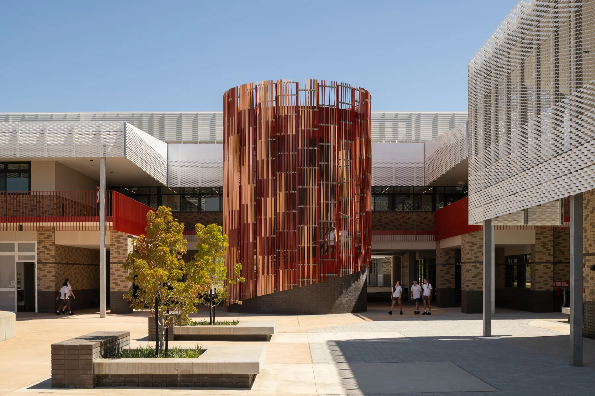
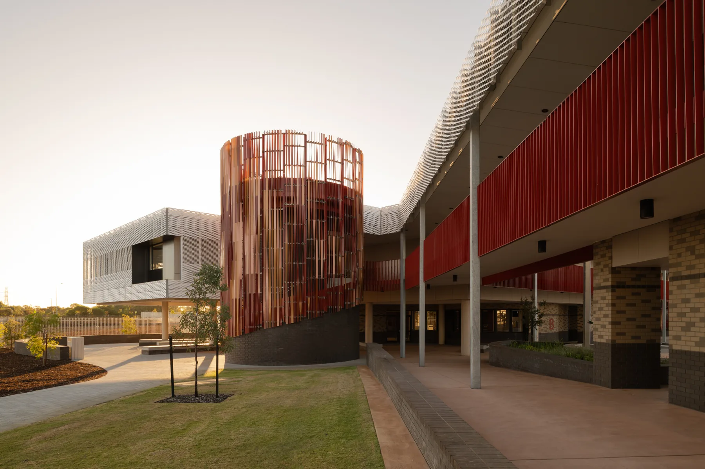
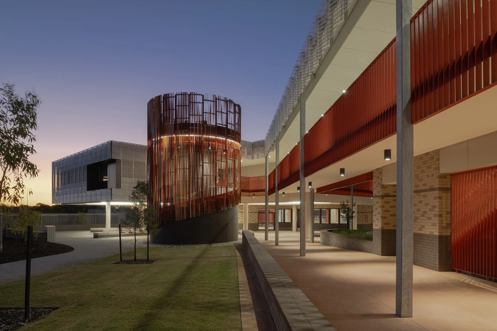
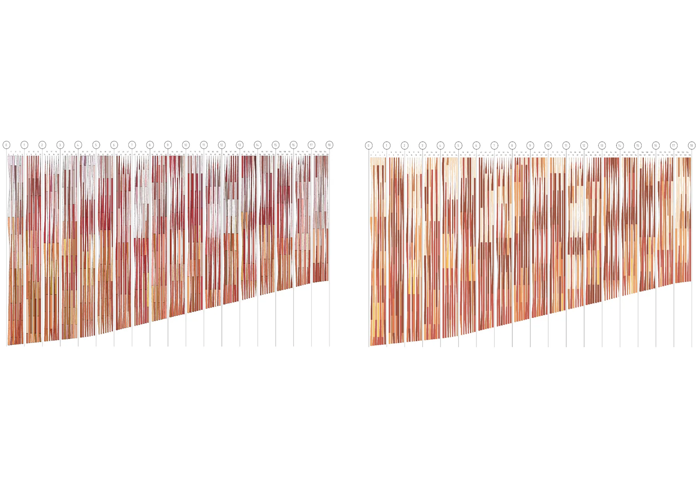
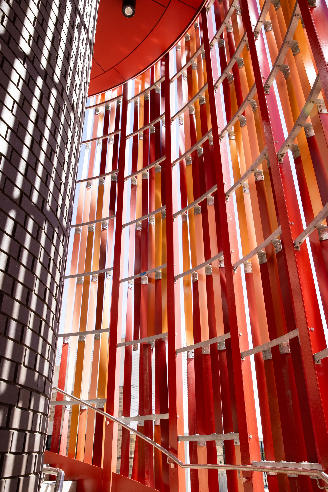
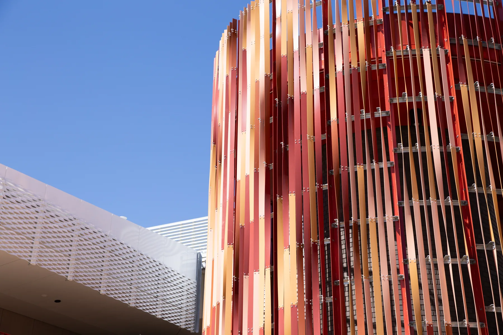
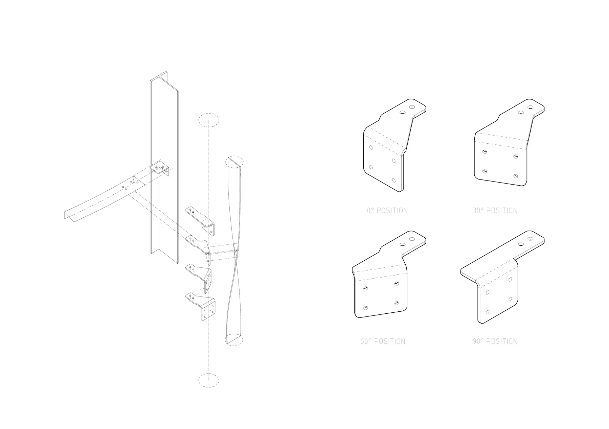

Anthesis Secondary College, Piara Waters
Commissioned by Dept. of Finance
This integrated artwork draws inspiration from the banksia flower native to the wetlands of Carine. Its title, Anthesis, refers to the period when a flower is fully open and functional, producing a striking colour gradient across its grid of buds. The artwork’s geometry, cladding pattern and palette reflect the flower’s distinctive texture and colouration.
Two circular staircases are clad in more than 720 individually shaped, powder-coated aluminium fins. Arranged as a diagrid lattice, the fins create a moiré effect reminiscent of the seed patterns found across the surface of a flowering banksia. In collaboration with Kilmore Group, we developed a custom fabrication tool to twist each fin into its unique configuration. The fins and supporting brackets were then optimised into a limited set of component types, simplifying fabrication and assembly.
- Design: Andrei Smolik, Daniel Giuffre, Rick Vermey
- Year completed: 2024
- Client: Dept. of Finance
- Architect: With Studio
- Fabricator: Kilmore Group
- Contractor: Perkins
- Budget: $300,000
- Size: 11m x 7m (312sqm)





